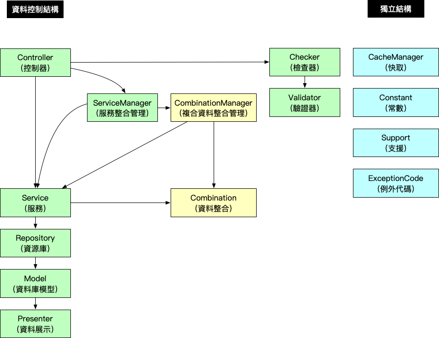

Combination & Cache 架構設計準則(2019)
傳統的 MVC（Model, View, Controller） 框架，當 Controller 收到請求之後，我們會在 Controller 內直接透過 Model 去撈取資料庫的資料，並在 Controller 做資料驗證、資料整合、快取、商業邏輯判斷…等等的工作。
當系統越來越大，會發現很多類似的商業邏輯的程式都散在各地，沒有辦法重複再利用，當程式需要異動或修改的時候，就要去搜尋所有程式碼，把許多相同商業邏輯的程式碼去做異動，但需要修改的地方若太多，往往會東漏西漏，導致系統出現錯誤，並造成往後開發的時間成本增加。
所以我們會想要做到 減少重複的程式碼、提高維護開發的效率，所以將程式碼依照分類及分層抽出獨立控管，讓不同類型的程式專心處理自己相關的商業邏輯，讓開發維護更容易。
隨著程式架構的演進會發展出更多不同的架構，所以這個設計架構準則也是會隨著時間做演進的。
資料處理邏輯分層
架構圖

架構說明
A. 資料控制結構
* Controller (控制器：控制資料流程)
* ServiceManager (服務整合管理：組合管理不同 Service 的商業邏輯)
* Service (服務：處理商業邏輯)
* Repository (資源庫：資料表資料撈取邏輯)
* Model (資料庫模型：資料表設定)
* Presenter (資料呈現：資料表資料格式呈現轉換)
* Combination（資料整合：整理 Repository 資料成資訊）
* CombinationManager（複合資料整合管理：整理多個 Service 的資料成資訊）
* Checker (檢查器：根據 Controller 所需商業邏輯，驗證不同資料表欄位資料)
* Validator (驗證器：資料表欄位資料驗證)
| 結構名稱 | 說明 |
|---|---|
| Controller (控制器) | 控制資料流程，控制要使用哪些 Service 或 ServiceManager 的商業邏輯，去組合出使用者請求需要的資料，並做資料的資料交易控制 (transaction) ，並使用 Checker 去檢查任何使用者傳進來的資料，確保資料的正確性 |
| ServiceManager (服務整合管理) | 協助 Controller 組合不同 Service 的資料成商業邏輯 |
| Service (服務) | 處理商業邏輯，組合不同的 Repository 資料成商業邏輯，提供 Controller 或 ServiceManager 存取 |
| Repository (資源庫) | 資料表資料撈取邏輯，撈取屬於自己 Model 不同條件下的資料，提供 Service 存取 |
| Model (資料庫模型) | 資料庫模型，資料表存取相關設定 |
| Presenter (資料呈現) | 資料呈現，協助 Model 做資料呈現轉換 |
| Checker (檢查器) | 協助 Controller 做資料驗證，在資料進入到程式邏輯前，都需要經過 Checker 將資料格式做驗證 |
| Validator (驗證器) | 協助 Checker 做資料驗證，Validator 只能驗證單一 Model 資料 |
| CombinationManager (複合資料整合管理) | 協助整理不同 Service 的複合式資料，若有資料的邏輯判斷需要不同的資料來源，則由 CombinationManager 負責整合處理 |
| Combination （資料整合） | 協助整理 Repository 資料成資訊 |
B.獨立結構
* CacheManager (快取：管理資源快取鍵值及清除快取)
* Constant (常數：定義資料狀態名稱)
* Support (支援：協助處理獨立邏輯資料處理)
* ExceptionCode (例外代碼：例外錯誤代碼定義)
| 結構名稱 | 說明 |
|---|---|
| CacheManager (快取) | 協助專案資料做快取資料的控制，可以在任何程式邏輯複雜的地方做快取存取控制，並統一清除快取 |
| Constant (常數) | 定義並命名所有資料狀態，確保資料值做異動時，不會影響程式邏輯 |
| Support (支援) | 協助處理獨立程式邏輯，邏輯沒有被其他任何的函式綁定，可以獨立完成 |
| ExceptionCode (例外代碼) | 定義例外代碼，可以統一管控當例外發生錯誤時，回傳的錯誤代碼 |
架構存取限制
- 不能跨 2 階層以上存取
- Controller 不能存取 Repository
- Controller 不能存取 Validator
- Service 不能存取 Model
- 低階層的不能存取高階層的資料
- Model 不能存取 Repository
- Repository 不能存取 Service
- Validator 不能存取 Checker
- 同一個資料類型，不能互相呼叫
- 避免同一類型類別呼叫，造成 new 物件的時候有無窮迴圈
- PostService 存取 UserService，UserService 存取 PostsService 造成無窮迴圈
- ServiceManager 不能呼叫 ServiceManager
- Service 不能呼叫 Service
- Checker 不能呼叫 Checker
- Validator 不能呼叫 Validator
- Repository 不能呼叫 Repository
- CacheManager 不能呼叫 CacheManager
- 避免同一類型類別呼叫，造成 new 物件的時候有無窮迴圈
- 獨立結構可以在任何一階層去呼叫
架構設計邏輯範例說明
A. 資料控制結構
Controller (控制器)
| 項目 | 說明 |
|---|---|
| 用途 | 控制資料流程 |
| 可以存取結構 | Checker、ServiceManager、Service、DB transaction，所有獨立結構 |
| 可以被存取結構 | 無 |
處理 HTTP 請求的入口，依照需求呼叫 ServiceManager 或 Service 去做資料的存取，大部分情況呼叫 Service 去組合需要的資料就好，若相同的組合邏輯在不同的 Controller 都有用到，那就使用 ServiceManager 去組合不同的 Service
要確保所有 Service 商業邏輯都正確跑完才允許對資料做異動，並避免 Transaction 在 Controller 及 Service 被重複呼叫，導致無法正確鎖定資料狀態，所以使用 Controller 當作資料交易（Transaction）的控制點
<?php
class PostController extends Controller
{
public function __construct(
PostServiceManager $PostServiceManager,
PostService $PostService,
CommentService $CommentService,
PostChecker $PostChecker
)
{
$this->PostServiceManager = $PostServiceManager;
$this->PostService = $PostService;
$this->CommentService = $CommentService;
$this->PostChecker = $PostChecker;
}
// 顯示文章
public function show($post_id) {
try {
// 驗證資料
$input = [
'post_id' => $post_id
];
$this->PostChecker->checkShow($input);
// 撈取文章
$Post = $this->PostServiceManager->findPost($post_id);
// 撈取文章留言
$Comment = $this->CommentService->getCommentByPostId(post_id);
} catch (Exception $exception) {
throw $exception
}
}
// 更新文章
public function update($post_id) {
try {
// 驗證資料
$input = request()->all();
$input['post_id'] = $post_id;
$this->PostChecker->checkUpdate($input);
// 交易開始
DB::beginTransaction();
// 更新文章
$Post = $this->PostService->update($post_id, $input);
// 交易結束
DB::commit();
} catch (Exception $exception) {
// 交易失敗
DB::rollBack();
throw $exception
}
}
}
ServiceManager (服務整合管理)
| 項目 | 說明 |
|---|---|
| 用途 | 組合管理不同 Service 的商業邏輯 |
| 可以存取結構 | Service、所有獨立結構 |
| 可以被存取結構 | Controller |
使用不同 Service 撈取資料，將不同資料組合成商業邏輯，供 Controller 做存取
<?php
class PostServiceManager {
public function __construct(
PostService $PostService,
UserService $UserService
)
{
$this->PostService = $PostService;
$this->UserService = $UserService;
}
// 撈取文章資料
public function findPost($post_id){
try {
// 撈取文章
$Post = $this->PostService->findPost($post_id);
// 撈取文章作者資料
$user_id = $Post->user_id;
$Post->user = $this->UserService->findUser($user_id);
return $Post;
} catch (Exception $exception) {
throw $exception
}
}
}
Service (服務)
| 項目 | 說明 |
|---|---|
| 用途 | 處理商業邏輯 |
| 可以存取結構 | Repository、所有獨立結構 |
| 可以被存取結構 | Controller、ServiceManager |
使用不同的 Repository 撈取資料，將不同資料組合成商業邏輯
<?php
class PostService {
public function __construct(
PostRepository $PostRepository,
PostTagRepository $PostTagRepository
)
{
$this->PostRepository = $PostRepository;
$this->PostTagRepository = $PostTagRepository;
}
// 撈取文章
public function findPost($post_id) {
try {
// 撈取文章
$Post = $this->PostRepository->find($post_id);
// 撈取文章標籤
$Tag = $this->PostTagRepository->getByPostId($post_id);
return [$Post, $Tag];
} catch (Exception $exception) {
throw $exception
}
}
}
Repository (資源庫)
| 項目 | 說明 |
|---|---|
| 用途 | 資料表資料撈取邏輯 |
| 可以存取結構 | Model、所有獨立結構 |
| 可以被存取結構 | Service |
撈取特定 Model 資料，像 PostRepository 可以存取 Post Model (模型) 的 基本資料，並使用不同條件撈取 Model 的資料，供 Service 做存取
也可以使用 PostRecommendRepository 存取 Post Model (模型) 的 推薦資料
同一個 Model (模型) 可以用不同的 Repository 去呼叫，但同一 Repository 只能有一個 Model (模型)
<?php
class PostRepository {
public function __construct(
Post $Post
)
{
$this->Post = $Post;
}
public function find($post_id) {
try {
// 撈取資料庫文章資料
$Post = $this->Post->find($post_id);
return $Post;
} catch (Exception $exception) {
throw $exception
}
}
public function findLatestPost() {
try {
// 撈取資料庫文章資料
$Post = $this->Post
->order('created_at', 'desc')
->first();
return $Post;
} catch (Exception $exception) {
throw $exception
}
}
}
Model (資料庫模型)
| 項目 | 說明 |
|---|---|
| 用途 | 資料表設定 |
| 可以存取結構 | 所有獨立結構 |
| 可以被存取結構 | Repository |
Eloquent 存取資料表相關設定，使用 Eloquent 直接存取資料表資料
<?php
class Post extends Model
{
protected $table = 'post';
protected $fillable = [];
protected $primaryKey = 'id';
protected $dates = ['created_at', 'updated_at'];
protected $presenter = PostPresenter::class;
}
Presenter (資料呈現)
| 項目 | 說明 |
|---|---|
| 用途 | 資料表資料格式呈現轉換 |
| 可以存取結構 | 所有獨立結構 |
| 可以被存取結構 | Model |
提供 Model 的資料用其他方式呈現
<?php
class PostPresenter extends Presenter
{
public function created_at_human_time()
{
return $this->created_at->diffForHumans();
}
}
Checker (檢查器)
| 項目 | 說明 |
|---|---|
| 用途 | 根據 Controller 所需商業邏輯，驗證不同資料表欄位資料 |
| 可以存取結構 | Validator、所有獨立結構 |
| 可以被存取結構 | Controller |
協助 Controller 驗證不同資料表資料的正確性，若驗證錯誤則丟處例外，Controller 根據例外代碼去做處理
<?php
class PostValidator {
public function checkFindPost($input){
// 驗證文章資料
$this->PostValidator->validatePostId($input);
$this->PostValidator->validatePostContent($input);
// 驗證會員資料
$this->MemberValidator->validateMemberId($input);
}
}
Validator (驗證器)
| 項目 | 說明 |
|---|---|
| 用途 | 資料表欄位資料驗證 |
| 可以存取結構 | 所有獨立結構 |
| 可以被存取結構 | Checker |
協助 Checker 驗證資料的正確性，若驗證錯誤則丟處例外，Checker 根據例外代碼去做處理
<?php
class PostValidator {
public function validatePostId($input){
// 設定驗證規則
$rules = [
'post_id' => [
'required',
'max:20',
],
];
// 開始驗證
$this->validator = Validator::make($input, $rules);
if ($this->validator->fails()) {
throw new Exception(
'文章編號格式錯誤',
PostExceptionCode::POST_ID_FORMAT_ERROR
);
}
}
}
Combination（資料整合）
| 項目 | 說明 |
|---|---|
| 用途 | 整理 Repository 資料成資訊 |
| 可以存取結構 | 所有獨立結構 |
| 可以被存取結構 | Serivce、CombinationManager |
當 Service 從 Repository 取得資料後，協助整理判斷 Repository 資料的屬性狀態，像是可以從 文章編號 取得 文章網址
<?php
class PostsCombination {
// 設定整合資訊
public function setCombinationInfo(&$Posts)
{
if (!($Posts instanceof Posts)) {
return false;
}
// 文章網址
$url = url("article/{$Posts->id}")
$Posts->info->url = $url;
}
}
CombinationManager（複合資料整合管理）
| 項目 | 說明 |
|---|---|
| 用途 | 整理多個 Service 的資料成資訊 |
| 可以存取結構 | Combination、Serivce、所有獨立結構 |
| 可以被存取結構 | ServiceManager、Controller |
當整合的資料需要經過不同的資料來源去判斷要產生什麼複合資訊，CombinationManager 協助整理不同來源的資料去做資料整合，目前會從 ServiceManager 去取得不同 Service 的資訊，所以將 CombinationManager 放在這一階層去進行呼叫
<?php
class PostsCombinationManager {
protected $UserService;
public function __construct(
UserCombination $UserCombination,
ProjectService $ProjectService
) {
// 服務
$this->UserCombination = $UserCombination;
}
public function setCombinationInfo(&$combination_data)
{
$Posts = array_get($combination_data, 'Posts');
if ($Posts instanceof Posts) {
// 設定文章關聯作者資訊
$this->UserCombination->setCombinationInfo($Posts->User);
// 是專題文章
if ($Posts->type == PostsConstant::TYPE_PROJECT) {
$Project = $this->ProjectService->findProjectByPostId($Posts->id);
$url = url("project/{$Project->slug}/{$Posts->id}")
$Posts->info->url = $url;
};
}
}
}
B.獨立結構
CacheManager (快取)
| 項目 | 說明 |
|---|---|
| 用途 | 管理資源快取鍵值及清除快取 |
| 可以存取結構 | x |
| 可以被存取結構 | 無限制 |
在 複雜 的資料庫查詢（Repository）或是商業邏輯（Service、ServiceManager），想要在一定時間內不要再重複的進行複雜的運算，可以透過快取將運算的結果快取起來
PostsCacheManager 文章資源庫
class PostRepository {
public function __construct(
Post $Post,
PostsCacheManager $PostsCacheManager
)
{
$this->Post = $Post;
$this->PostsCacheManager = $PostsCacheManager;
}
public function find($post_id) {
try {
$cache_key = $this->PostsCacheManager->getPostIdCacheKey($post_id);
$Posts = $this->PostsCacheManager->getCache($cache_key);
if (!is_null($Posts)) {
return $Posts;
}
// 撈取資料庫文章資料
$Posts = $this->Post->find($post_id);
if (!is_null($Posts)) {
// 有該資料，將資料存入快取
$this->PostsCacheManager->putCache($Posts, $cache_key);
}
return $Posts;
} catch (Exception $exception) {
throw $exception
}
}
public function findLatestPost() {
try {
// 撈取資料庫文章資料
$Post = $this->Post
->order('created_at', 'desc')
->first();
return $Post;
} catch (Exception $exception) {
throw $exception
}
}
}
PostsCacheManager 文章快取
class PostsCacheManager {
protected $cache_key = [
// 文章快取
'post_id' => '[PostById][post_id:{post_id}]',
// 已發布文章快取
'published_post_id' => '[PublishedPostById][post_id:{post_id}]',
];
/**
* 文章快取
*/
public function getPostIdCacheKey($post_id)
{
$search = [
'{post_id}',
];
$replace = [
$post_id,
];
$cache_key = str_replace($search, $replace, $this->cache_key['post_id']);
return $cache_key;
}
/**
* 已發布文章快取
*/
public function getPublishedPostIdCacheKey($post_id)
{
$search = [
'{post_id}',
];
$replace = [
$post_id,
];
$cache_key = str_replace($search, $replace, $this->cache_key['published_post_id']);
return $cache_key;
}
/**
* 文章快取
*/
public function getPostIdCacheKey($post_id)
{
$search = [
'{post_id}',
];
$replace = [
$post_id,
];
$cache_key = str_replace($search, $replace, $this->cache_key['post_id']);
return $cache_key;
}
/**
* 清除文章快取
*/
public function forgetPostsCache($cache_data)
{
$Posts = array_get($cache_data, 'Posts');
if (!is_null($Posts) AND ($Posts instanceof Posts)) {
$cache_key = $this->getPostIdCacheKey($post_id);
$is_cache_forget = $Cache::forget($cache_key);
$cache_key = $this->getPublishedPostIdCacheKey($post_id);
$is_cache_forget = $Cache::forget($cache_key);
// .... 清除文章其他快取
}
}
}
Constant (常數)
| 項目 | 說明 |
|---|---|
| 用途 | 定義資料狀態名稱 |
| 可以存取結構 | x |
| 可以被存取結構 | 無限制 |
資料皆為靜態變數，可以供所有資料層級 (e.g. Controller、Service、Repository) 做存取
<?php
class PostConstant {
const POST_TYPE_PUBLIC = 'P';
const POST_TYPE_DELETE = 'D';
}
Support (支援)
| 項目 | 說明 |
|---|---|
| 用途 | 協助處理獨立邏輯資料處理 |
| 可以存取結構 | x |
| 可以被存取結構 | 無限制 |
方法皆為靜態變數，可以供所有資料層級 (e.g. Controller、Service、Repository) 做存取
若有其他可供全域共用的方法皆寫在 Support 靜態方法供大家存取
<?php
class PostSupport {
// 撈取所有文章類型
public static function getAllPostType() {
$all_post_type = [
PostConstant::POST_TYPE_PUBLIC,
PostConstant::POST_TYPE_DELETE,
];
return $all_post_type;
}
}
ExceptionCode (例外代碼)
| 項目 | 說明 |
|---|---|
| 用途 | 例外錯誤代碼定義 |
| 可以存取結構 | x |
| 可以被存取結構 | x |
資料皆為靜態變數，可以供所有資料層級 (e.g. Controller、Service、Repository) 做存取
<?php
class PostExceptionCode {
const POST_ID_FORMAT_ERROR = 10000001;
const POST_NOT_FOUND = 10000002;
const POST_TAG_NOT_FOUND = 10000003;
}
View (視圖) 使用限制
View 的職責是負責顯示資料，所有的資料應由 Controller 準備好再傳給 View，所以不要在 View 內有複雜的程式判斷邏輯，在 View 裡面只有 if, for, foreach 跟 echo 列印 的程式，僅需要將資料呈現在對的 HTML 裡面，不要再對資料重複處理過。
像是文章的網址可能會因為類型不同會有不同的網址，像是一般文章網址可能為 http://kejyun.com/post/1，而影音文章網址可能為 http://kejyun.com/video/2，兩者的資料皆為 Post 資料表的資料，在 View 中要顯示網址應為 echo $Post->post_url; 將網址印出，post_url 則是在傳給 View 之前就經過邏輯判斷的資料，而不是在 View 中判斷不同文章類型（PostConstant::POST_TYPE_NORMAL, PostConstant::POST_TYPE_VIDEO）在 View 中顯示不同的網址資料。
之後若文章網址邏輯需要修改，則需要到各個 View 中去修改，很容易漏改道造成系統程式出錯
<a href="{{ $Post->info->post_url }}"> {{ $Post->Title }}</a>